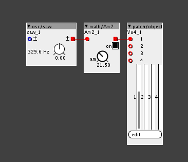

Hi all:
I would like to have a Big vumeter to display audio signals to prevent saturation, especially at the inputs, but at the outputs too.
I'm actually using the Vumeters that came with the Audio Input and Audio Output objets, but they are hard to read as they are really small (at least with the screen resolution I'm using).
Thank you!
Can anybody code a Big Vumeter?
Sebo
#1
jaffasplaffa
#2
I think this has to be done on the firmware side, as there are no objects that has a big display. Its non existing in Axo-world.
I did som "creative hacking" and came up with this, its not perfect, but better its bigger than the tiny small ones. Feel free to try it out.

Vu meter.axp (2.0 KB)
New UI objects need to be coded in the editor. (rather than firmware)
But perhaps a ‘peak’ indicator using a simple toggle box might be sufficient, that could be coded without changing any Axoloti code.
(Perhaps something already in community library?)
Sebo
#4
Thank you both!
I will try the jaffasplaffa patch hack 
@thetechnobear I think a clip indicator will not help me in my situation as I want to see how much headroom I have before clipping, but may be try to buil one just to have it for other purpuoses...
jaffasplaffa
#6
I mean you need the actual UI element, the actual meter. There is not a big VU meter in Axo world, so therefor this has to created in the firmware before you can start writing any functions that uses it. Id it was possible to write custom UI elements directly in object we would probably have seen that by now.
you need to add new display types to the (java) editor code, not the firmware (on the axoloti)
the firmware has no knowledge of the UI components, the patch code merely tells it to fill a display vector (which is a vector of 32 bit ints) , with the values that are required (ie.. what you set in the object), then this is sent back as serial data over USB back to the editor running on your mac/pc which then interprets that stream and is rendered by the UI code in the editor... the firmware has no knowledge (nor care) if that data is going to be displayed as a VU meter, a hex number bar, or dial.
so to add new UI elements is a matter of adding a couple of (java) classes in the editors codebase.
no, because to do so would mean users would need to start adding functionality to the editor code base, which would mean their objects would be incompatible with others version of axoloti!
jaffasplaffa
#8
ahh yes, firmware was not the right word, but its definately something that needs more tweaking than regular object editing.
Yes thats exactly what I am saying.... If it was easy to do, we would have seen a lot more variety in UI elements. So maybe firmware is not the right word, but it needs more work than just editing an object.

lokki
#11
your eyes work at 1/60th of k-rate tops so that should be fine
or do you want to measure ultra-short audio peaks?
Sebo
#12
It's not about what I can see, It's about I will miss all the samples between readouts... I want to avoid clipping my inputs / outputs, if the VU just show a readout every 16 audio samples, the clipping can happen between readouts... A VU integrates the readouts so the eye can see it, but takes in account every sample...
Gavin
#13
You may want to look at modifying one of the scope displays, rather then showing the full scope, try and get it show a kind of sweet spot and clipping spot, rather then the whole full length of the scope.
lokki
#14
ok. that's why i asked about the short spikes.and doesn't the envelope follower also integrate the samples?
thetechnobear
#15
bare in mind the current vu meter objects, only look at the first sample 
from a UI perspective, i think you should be asking yourself, what is it i want to know? then find a way to represent it, with whats available.
to me it sounds like you want to know, when you are approaching and exceeding certain thresholds, so do the maths to work that out, then a simple UI object can be used to show just that.
(still sounds to me like you need something based on rms/peak, perhaps then put into a bar or toggles that show the 'sensitive' area)
but of course, this could just be me being practical i.e. using what we have, as there is not going to be a bigger vu-meter in the next few weeks, so what your best solution with what we have?
Sebo
#16
I f the envelope follower works at srate (even if they give me krate values), yes I could use it, but If it works at krate (I think it does), it integrates at krate, and will miss a lot of samples..
Sebo
#17
I agree with you, I will work with I already have, just wishing something for the future
Thanks!!!